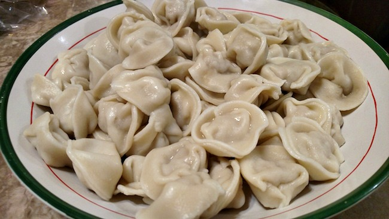
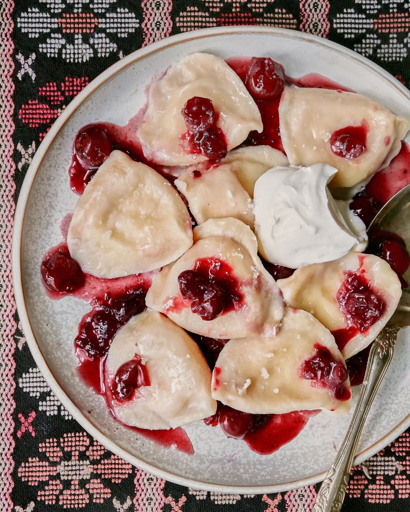
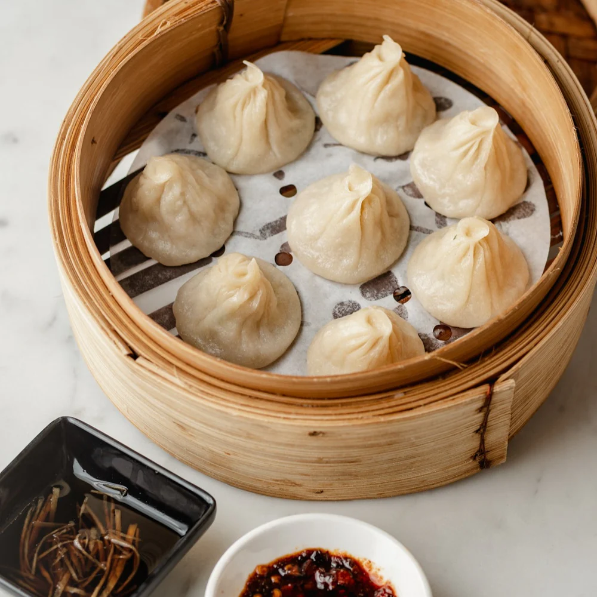
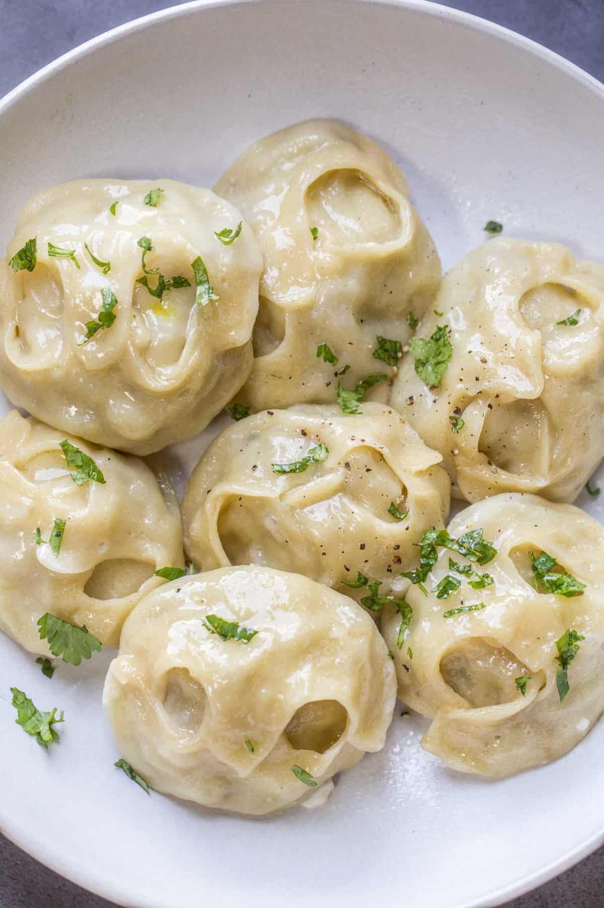
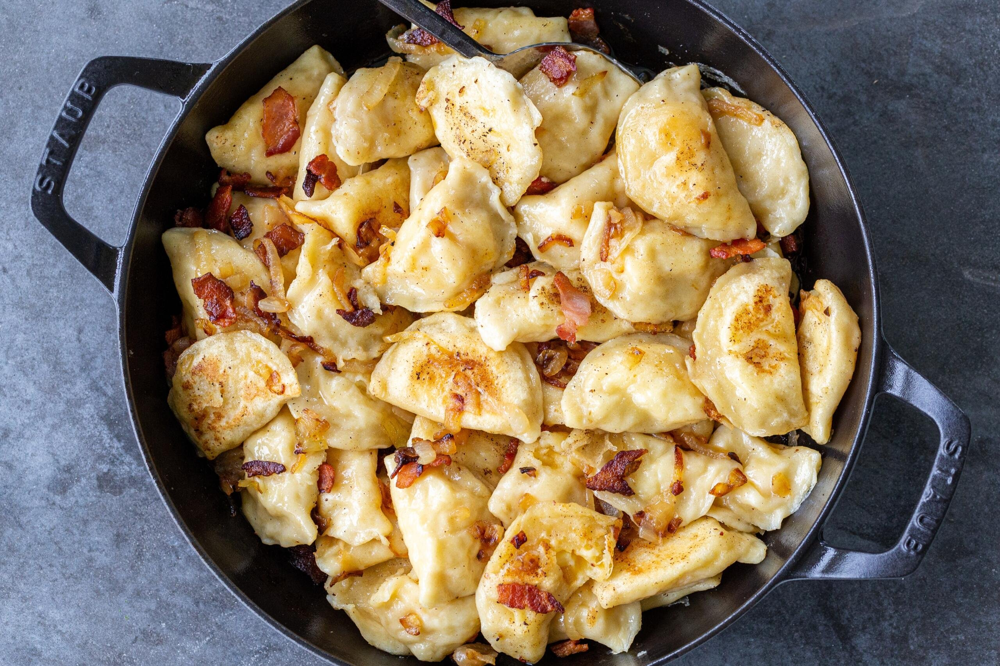
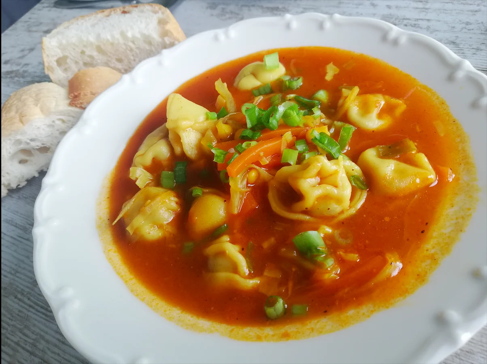

| Pelmeni | |
|---|---|
|  | The preferred way is sourcream, vinegar and black pepper. There is also a forbidden and heretical breakfast path, where you throw in two eggs over medium. The juice of the pelmeni mixes with the sourcream, vinegar and egg, resulting in something close to hollandaise. Very bad. |
| Vareniki (Sour cherry) | |
|  | Is it a dessert? A hot appetizer? A first or second entree? Such semantical inquiries are a waste of time. The only relevant question is "Are there any left?" |
| XiaoLongBao | |
|  | A.k.a "Shanghai Soup Dumplings". A pork and beef dumpling to rule all dimsum, with a light but sophisticated broth that bursts out of each piece it is already supreme, but then you add Cantonese chili oil to the mix. |
| Manti | |
|  | A dumpling of unmatched power and purity, fuelled by lamb and tradition; channeling the heroic spirit and freedom of the steppes. |
| Pierogi | |
|  | Filled with creamy seasoned potato puree. Both the ones from COSTCO and the ones from Geary Street are excellent. As in the case of Pelmeni, the blasphemous and sinful way to go with these, is with eggs, but also since the filling is starch, the opportunity to add stir-fried caseless breakfast sausage opens like the amber gates of hell that draw you irresistibly towards corruption. |
| Chuchvara | |
|  | While they do exist as a fried variety, the superior form is definitely in soup; for the soup is Uzbek lamb soup, the depth and heartiness of which is an unstoppable, all-conquering magical force. |